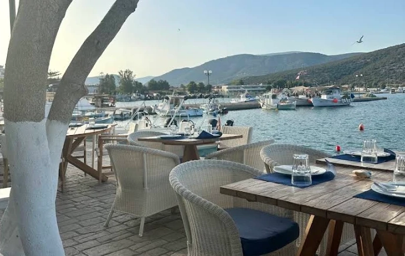
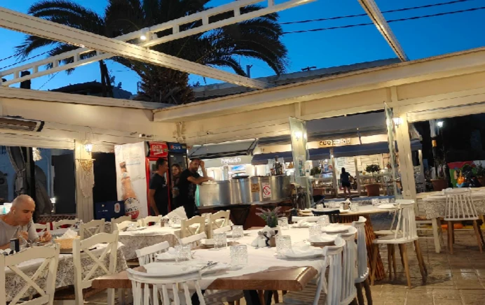
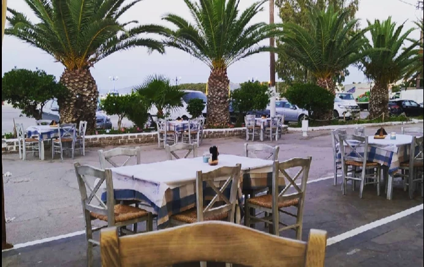
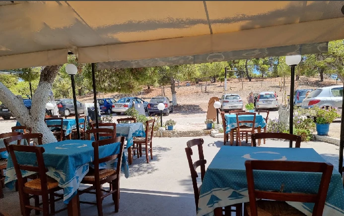
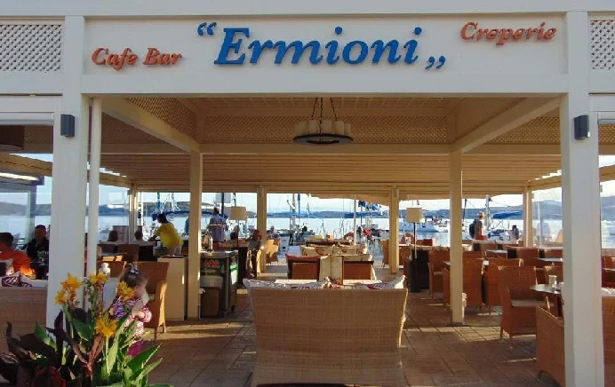

ΚΟΝΤΑ ΜΑΣ
Τα αγαπημένα μας μέρη
ΟΙ ΠΡΟΤΑΣΕΙΣ ΜΑΣ
Ταβέρνες, βεράντες και ένα καλό καφέ
Μέρη που αγαπάμε, όλα σε μικρή απόσταση με το αυτοκίνητο από το σπίτι στην Ερμιόνη και γύρω της.

ΕΣΤΙΑΤΟΡΙΟ · ΛΙΜΑΝΙ ΕΡΜΙΟΝΗΣ
Maria's All-Day Restaurant
Εξαιρετικό! Στην καρδιά του λιμανιού, με θέα στον κόλπο της Ερμιόνης, θα σας υποδεχτεί με χαμόγελο η ίδια η Μαρία. Όλα τα πιάτα είναι εξαιρετικά, πάντα φρέσκα και σπιτικά, και οι μερίδες γενναιόδωρες. Η ατμόσφαιρα είναι χαλαρή και ήρεμη. Αφήστε τη Μαρία να σας καθοδηγήσει· θα σας προτείνει με χαρά πιάτα από το μενού. Το εστιατόριο είναι υπέροχο και το βράδυ, με το φως των κεριών.

ΠΙΤΣΑΡΙΑ · ΒΕΡΑΝΤΑ ΣΤΗ ΘΑΛΑΣΣΑ
Cookoida
Εξαιρετική πίτσα. Εξυπηρέτηση πολύ προσεκτική και φιλική… Με λίγα λόγια… Μη διστάσετε να απολαύσετε ένα ωραίο γεύμα στη βεράντα – σκεπαστή ή υπαίθρια – με θέα στη θάλασσα.

ΤΑΒΕΡΝΑ · ΚΟΝΤΑ ΣΤΗΝ ΠΛΑΤΕΙΑ ΤΗΣ ΑΓΟΡΑΣ
Ταβέρνα «Καραβάκι»
Για τους γνώστες, είναι ακριβώς το είδος της ταβέρνας που αγαπάμε. Λίγο κρυμμένη, κοντά στην πλατεία της αγοράς. Χωρίς θέα στη θάλασσα, χωρίς φασαρία και περιττά στολίδια, αλλά με υπέροχους μεζέδες. Τρώτε ανάμεσα στους ντόπιους, με λίγους τουρίστες, και είναι πραγματική απόλαυση. Πολύ ζεστή υποδοχή με χαμόγελο. Τα μπαρμπούνια είναι απίστευτα φρέσκα. Εξαιρετική φάβα, κολοκυθοκεφτέδες και ταραμοσαλάτα.

ΠΑΡΑΔΟΣΙΑΚΗ ΤΑΒΕΡΝΑ
Ταβέρνα «Le Bisti»
Μια παραδοσιακή ελληνική ταβέρνα. Η διακόσμηση σίγουρα δεν συγκρίνεται με τις ταβέρνες του λιμανιού, αλλά το φαγητό είναι πολύ καλό. Μερικές φορές αυτό που έχετε στο πιάτο σας μετράει περισσότερο από μια εκλεπτυσμένη διακόσμηση με μέτριο φαγητό. Το μέρος είναι πολύ ήσυχο και απέναντι υπάρχει πολύ μεγάλος χώρος στάθμευσης. Η εξυπηρέτηση είναι πολύ φιλική και πρόσχαρη, οι τιμές εξαιρετικά λογικές. Λίγοι τουρίστες και πολλοί ντόπιοι.

ΚΑΦΕ ΚΑΙ ΚΟΚΤΕΙΛ · ΔΙΠΛΑ ΣΤΗ ΘΑΛΑΣΣΑ
Café Bar Ermioni
Είναι πραγματική απόλαυση να χαλαρώνετε στους καναπέδες με θέα στη θάλασσα. Εδώ μπορείτε να απολαύσετε πεντανόστιμα παγωτά ή σορμπέ. Είναι το ιδανικό σημείο για ένα κοκτέιλ ή ένα ποτό... πολύ ζεστή υποδοχή με χαμόγελο. Βρίσκουν πάντα χρόνο για μια μικρή κουβέντα μαζί σας.